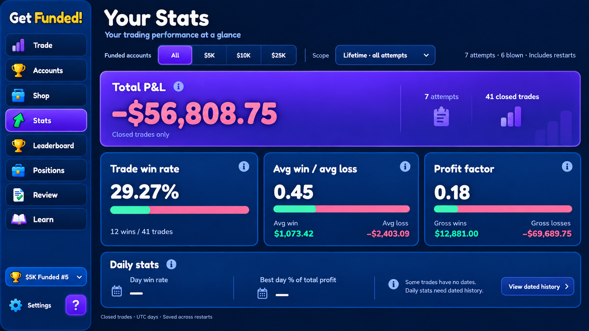
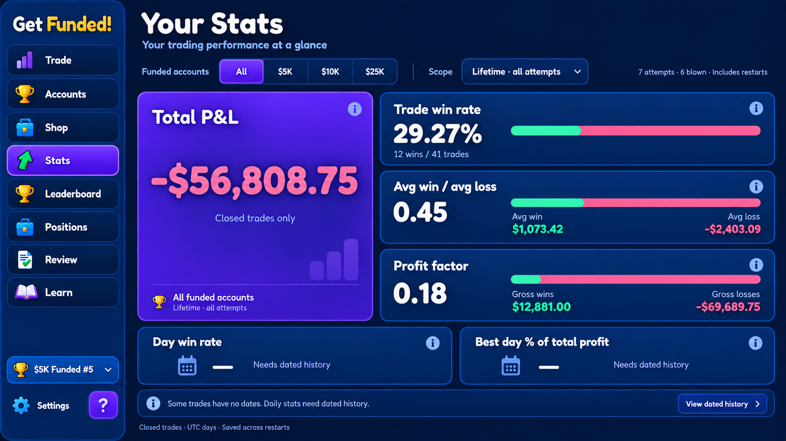
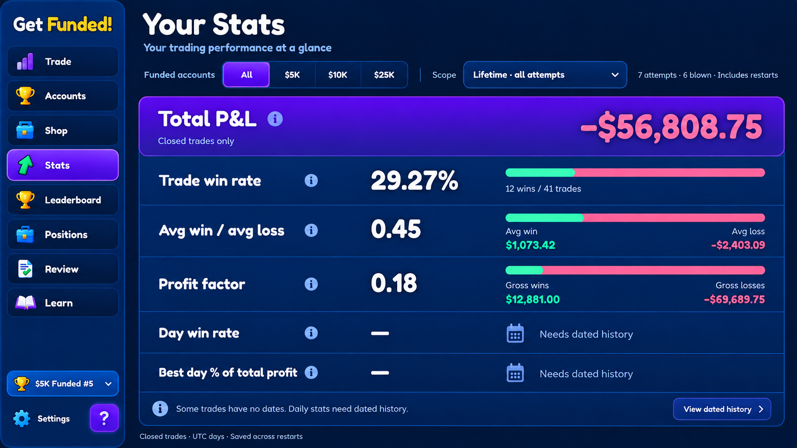
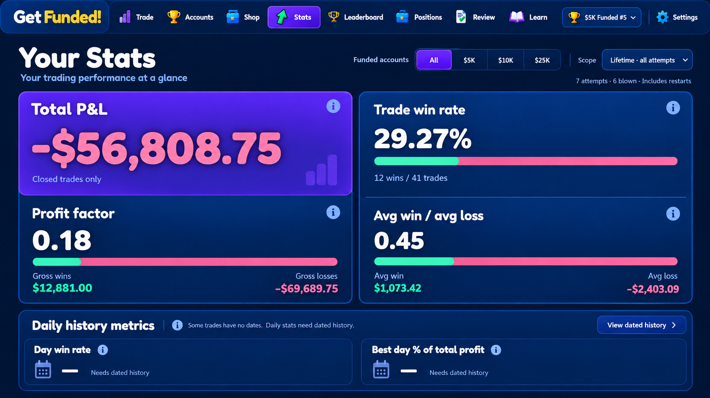

1 · Summary Banner
Full-width P&L banner, three performance cards, and a compact daily-stat strip.
Download imageGET FUNDED! / POLISHED GAME
Click an option to view the full-size mockup. All four use the same six stats and the approved Polished Game visual direction.

Full-width P&L banner, three performance cards, and a compact daily-stat strip.
Download image
Tall P&L card beside three horizontal stat rows, with daily stats below.
Download image

Top navigation frees the full width for two grouped panels and daily stats.
Download image